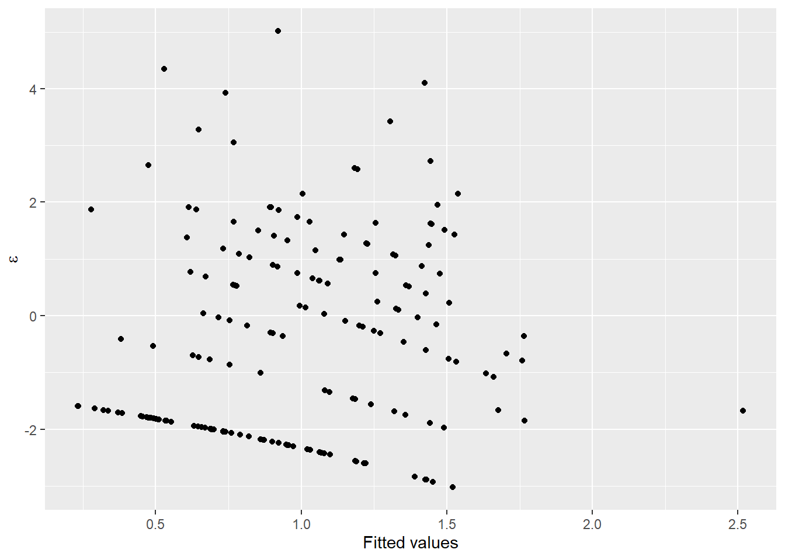
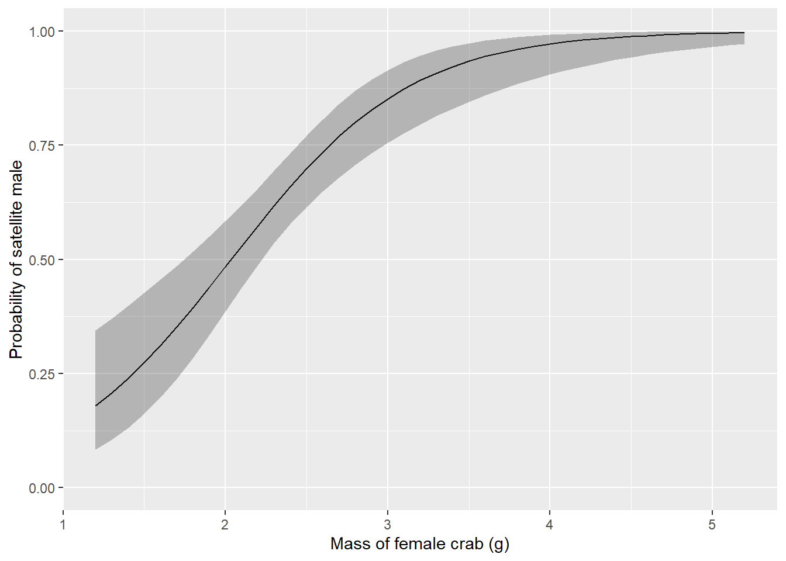
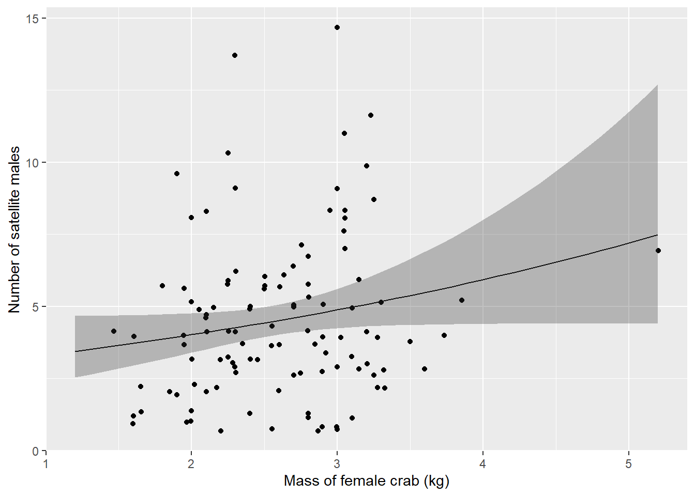

13.4 Zero inflation
The fits of these two models, in reality, suggest the need to for what is becoming an increasingly common statistical tool: the zero inflated count model. Zero inflation (excess zeroes in count data) can arise by one of two mechanisms: true (“process”) zeros and observational zeros that result from imperfect detection.
One approach to dealing with this is to use a hurdle model. The idea is to make two separate models: 1) a logistic regression model to help us determine which factors influence whether the phenomenon of interest even occurred (0 or 1), and 2) a count model to help us determine what factors influence with the frequency of occurrence given that it occurred in the first place.
When these models are linked mathematically, we call it a “mixture model” - an approach that has become very popular for accounting for imperfect detection when estimating abundance of organisms. For now, let’s just look at the hurdle model for our crab data as the n-mixture approach falls solidly in the realm of “advanced” methods we’ll not discuss in this book.
First, we need to make a binary indicator variable to represent whether or not any satellites were present:
# Make a new column for count
# and absence (of satellite males)
# and initialize to zero
crabs$present <- 0
# Assign a '1' if any satellites were
# observed
crabs$present[crabs$satellites > 0] <- 1Now, the first step in the hurdle model is to fit a logistic regression model to predict how our response is affected by some combination of explanatory variables.
##
## Call:
## glm(formula = present ~ mass, family = "binomial", data = crabs)
##
## Deviance Residuals:
## Min 1Q Median 3Q Max
## -2.1106 -1.0750 0.5427 0.9122 1.6323
##
## Coefficients:
## Estimate Std. Error z value Pr(>|z|)
## (Intercept) -3.6933 0.8799 -4.197 2.70e-05 ***
## mass 1.8145 0.3766 4.818 1.45e-06 ***
## ---
## Signif. codes: 0 '***' 0.001 '**' 0.01 '*' 0.05 '.' 0.1 ' ' 1
##
## (Dispersion parameter for binomial family taken to be 1)
##
## Null deviance: 225.76 on 172 degrees of freedom
## Residual deviance: 195.74 on 171 degrees of freedom
## AIC: 199.74
##
## Number of Fisher Scoring iterations: 4Here we see that mass has a significant effect on whether or not any satellite males are present. You could imagine fitting any number of plausible biological models for comparison using AIC at this point.
Step 2 is to fit a count model to explain the effects of some combination of explanatory variables on the frequency with which the phenomenon occurs given that it ever occurred in the first place. Note: This does not have to be the same combination of explanatory variables. In fact, it is always conceivable that different processes influence these two distinct phenomena. As with the count-absence model, you could even fit a candidate set of models and proceed with model comparisons using AIC.
# Make a model relating the number
# of satellite males to the mass
# of female crabs
step2 <- glm(
satellites ~ mass,
data = crabs[crabs$satellites != 0, ],
family = "negative.binomial"(theta = 1)
)
# Print a summary of the model
summary(step2)##
## Call:
## glm(formula = satellites ~ mass, family = negative.binomial(theta = 1),
## data = crabs[crabs$satellites != 0, ])
##
## Deviance Residuals:
## Min 1Q Median 3Q Max
## -1.08178 -0.43875 -0.09937 0.26840 1.36868
##
## Coefficients:
## Estimate Std. Error t value Pr(>|t|)
## (Intercept) 1.0036 0.2726 3.681 0.000363 ***
## mass 0.1941 0.1018 1.907 0.059190 .
## ---
## Signif. codes: 0 '***' 0.001 '**' 0.01 '*' 0.05 '.' 0.1 ' ' 1
##
## (Dispersion parameter for Negative Binomial(1) family taken to be 0.3128844)
##
## Null deviance: 35.931 on 110 degrees of freedom
## Residual deviance: 34.849 on 109 degrees of freedom
## AIC: 584.04
##
## Number of Fisher Scoring iterations: 4From these results, we can see that our count models in the previous sections were really just picking up on the large number of zeroes in our data set. We know this because of the differences in the results between the models step1 and step2.
Likewise, we can take another look at our model diagnostics for step2 to see if our diagnostic plots look more reasonable now.
ggplot(step2, aes(x = .fitted, y = .resid)) +
geom_jitter() +
xlab("Fitted values") +
ylab(expression(paste(epsilon)))
Here, we can see that our residual plots indicate a pretty drastic improvement.
13.4.1 Predictions
Now that we are finally happy with our residual plots (wow, that took a lot longer than fitting any of the models!) we can make a plot of our predictions against the raw data to see how we did.
Let’s start with the count/absence component that we fit in step1:
Make some predictions from the model using a sequence of new values of mass based on what we observed in our data set:
# Sequences of new masses based on the min and max observed
# in our data
new_mass <- data.frame(mass = seq(min(crabs$mass), max(crabs$mass), .1))
# Make predictions using step1 model and the new_mass df
count_preds <- data.frame(
predict(step1, newdata = new_mass, type = "link", se.fit = TRUE)
)
# Get 95% confidence intervals
count_preds$lwr <- count_preds$fit + count_preds$se.fit * qnorm(0.025)
count_preds$upr <- count_preds$fit + count_preds$se.fit * qnorm(0.975)
# Invert the logit-link function
count_preds <- apply(count_preds, 2, boot::inv.logit)
# Combine the new masses and the predictions with which
# they are associated
pres_preds <- data.frame(new_mass, count_preds)Important: Our hurdle model actually contains two models (step1 and step2). The step1 component is actually logistic regression and therefore uses the logit link function that we introduced in Chapter 12, so we need to invert the logit to get the probability of a female having any satellite males as a function of mass. This is done in the code above. Make sure you understand how and why we do this!
Once you’ve got that down, it’s all over but the plotting. Here is how predicted probability of satellite male crab count changes across the range of observed female mass:
ggplot(pres_preds, aes(x = mass, y = fit)) +
geom_line() +
geom_ribbon(aes(ymin = lwr, ymax = upr, color = NULL), alpha = .3) +
scale_y_continuous(limits = c(0, 1)) +
xlab("Mass of female crab (g)") +
ylab("Probability of satellite male")
Finally, we can make a plot of the number of satellite males we would expect to see on a female crab given that she had attracted any males in the first place.
Also important: We need to remember here that we have two different models. The first model step1 was a binary logistic regression, so it used the logit link. The second model step2 was a count model and used the log link. That means we need to invert the log link to get our predicted counts back on the real scale.
# Sequences of new masses based on the min and max observed
# in our data
new_mass <- data.frame(mass = seq(min(crabs$mass), max(crabs$mass), .1))
# Make predictions using step2 model and the new_mass df
count_preds <- data.frame(
predict(step2, newdata = new_mass, type = "link", se.fit = TRUE)
)
# Get 95% confidence intervals
count_preds$lwr <- count_preds$fit + count_preds$se.fit * qnorm(0.025)
count_preds$upr <- count_preds$fit + count_preds$se.fit * qnorm(0.975)
# Invert the log link function
count_preds <- apply(count_preds, 2, exp)
# Combine the new masses and the predictions with which
# they are associated - overwriting on the fly - yuck!!
count_preds <- data.frame(new_mass, count_preds)Here is a plot showing how the number of satellite males observed changes with the mass of female horseshoe crabs:
ggplot(count_preds, aes(x = mass, y = fit)) +
geom_line() +
geom_jitter(aes(x = mass, y = satellites), data = crabs[crabs$satellites > 0, ]) +
geom_ribbon(aes(ymin = lwr, ymax = upr, color = NULL), alpha = .3) +
xlab("Mass of female crab (kg)") +
ylab("Number of satellite males")
Well, it doesn’t exactly inspire great confidence in the biological relationship between female horseshoe crab mass and the number of satellite males she attracts, but that is exactly why it is so important to communicate these effects